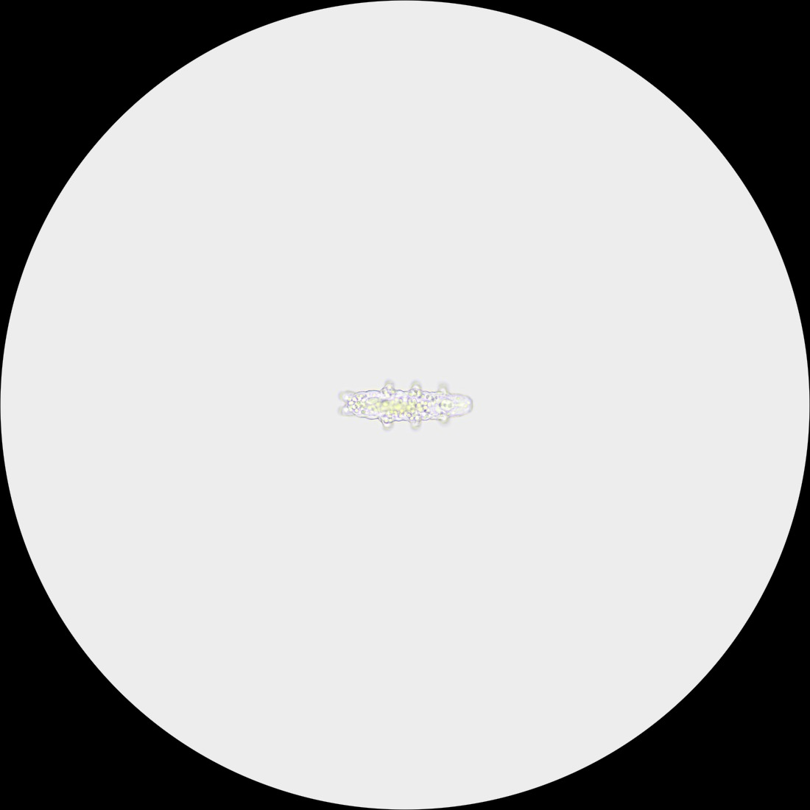
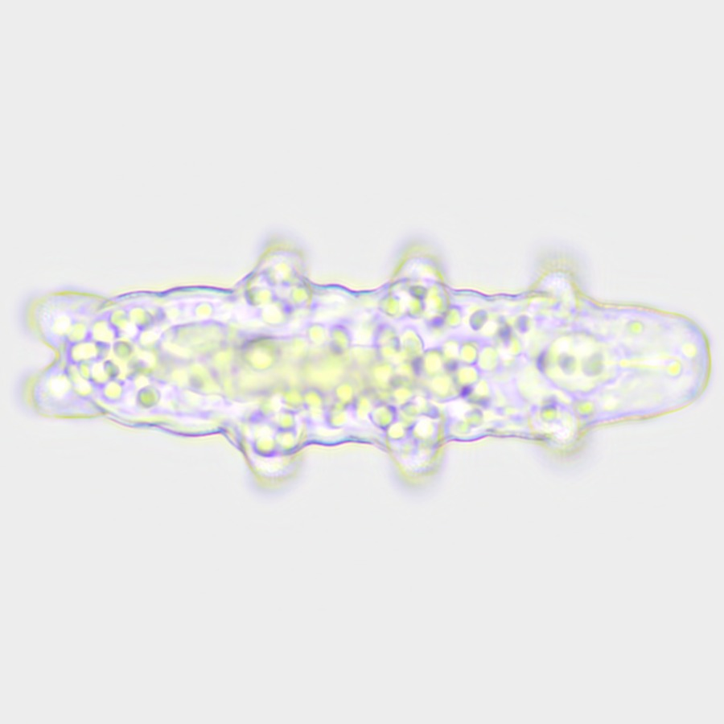
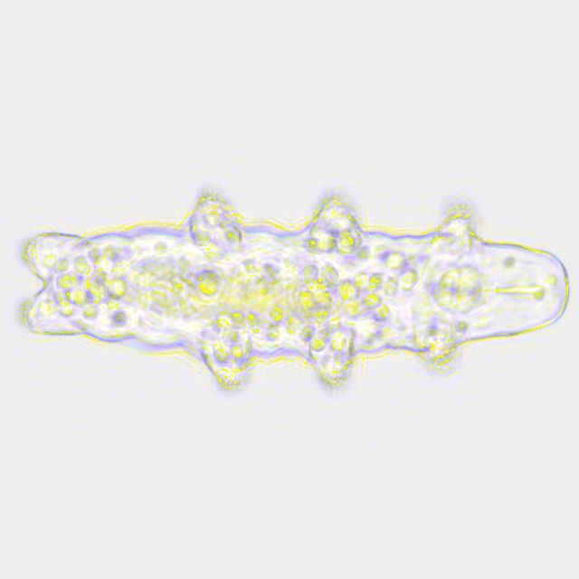
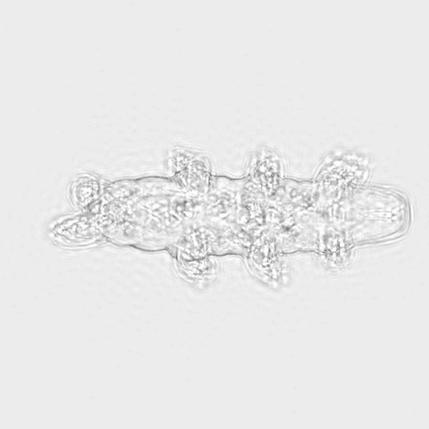
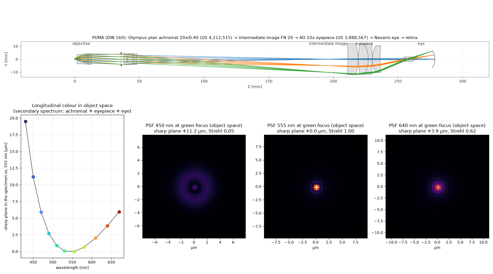
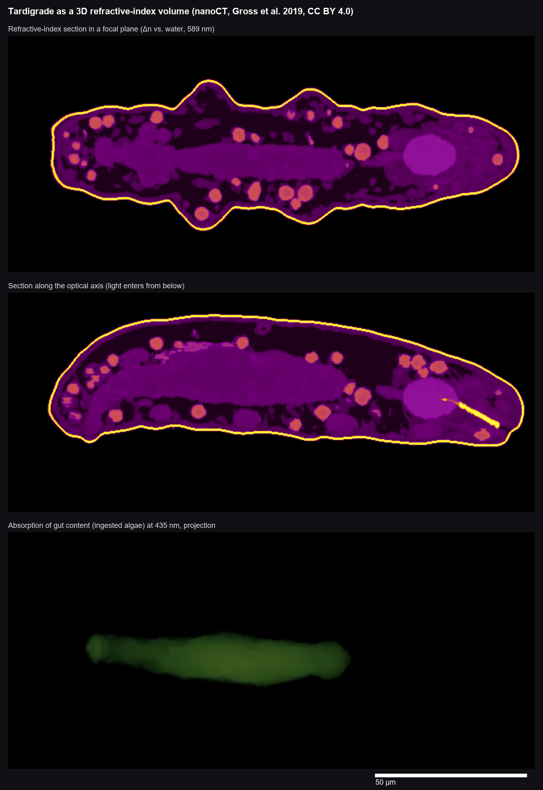

Every image on this page is computed, none is painted. Light from a white LED travels as a wave through a real, nanoCT-scanned tardigrade. It then passes lenses whose data come from open patents: the objective, the eyepiece and a model eye. The colour fringes, blur and diffraction you see all come out of that calculation.


Drag inside the ring: roll the animal · on the ring: turn the slide · right-drag, Shift+drag or two fingers: move the slide · wheel or ↑ ↓: focus · Ctrl+wheel, pinch or + −: zoom · double-click: home
Drag to rotate, scroll or pinch to zoom. Built from the original PUMA CAD parts (FreeCAD → Blender → glTF), assembled by hand from the PUMA build guide, so part positions are approximate.




Sources and licences. Tardigrade scan: Gross, V. et al. (2019) "X-ray imaging of a water bear offers a new look at tardigrade internal anatomy", Zoological Letters 5:14, CC BY 4.0. The PUMA microscope was invented and designed by Dr Paul J. Tadrous (@TadPath): github.com/TadPath/PUMA (CAD GPL-3.0, docs GFDL); paper: J. Microsc. 283:259–280 (2021), doi:10.1111/jmi.13043. This page is an independent project built on PUMA and is not endorsed by its author. Objective: US 4,212,515 (Itaya, Olympus 1980). Eyepiece: US 3,888,567 (Shoemaker, American Optical 1975). Eye: Navarro, Santamaría & Bescós, JOSA A 2 (1985). Ray tracing: Optiland (MIT). Glass data: Ohara and Schott catalogues. 3D viewer: model-viewer (Apache-2.0).